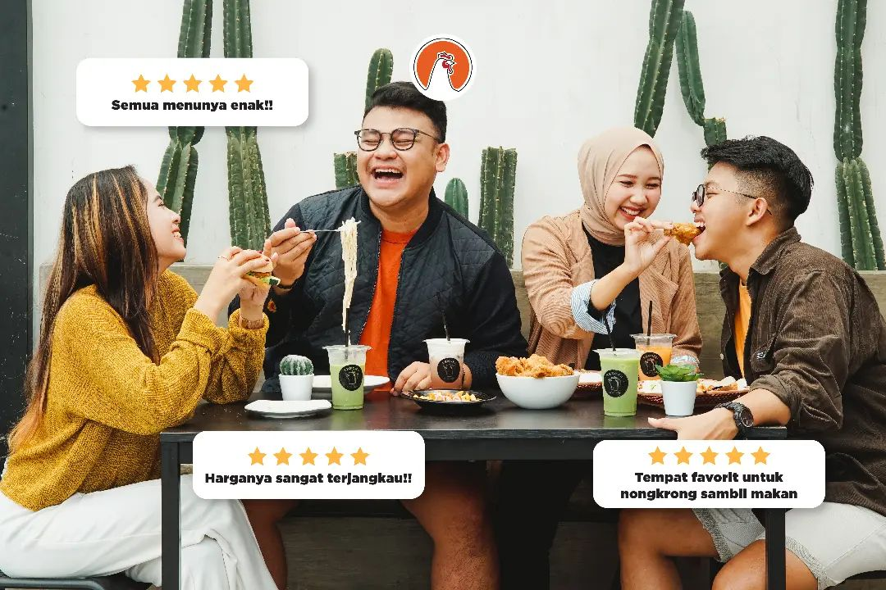

About
Ayam Ternak merupakan Tempat makan yang wajib kamu kunjungi saat di Bojonegoro karena harga yang ditawarkan sangat affordable di kantong pelajar, mahasiswa dan masyarakat umum. Terletak ditengah kota yang tidak jauh dari Alun-Alun Kota.
Tempat ini tidak hanya menyediakan Order Dine-In atau Takeaway saja, Bagi kalian kaum laper tapi mager antri bisa order online melalui nomer WA Admin dan tersedia juga di Grabfood, Gofood, Maxim dan Ojol lokal kesayangan kalian.